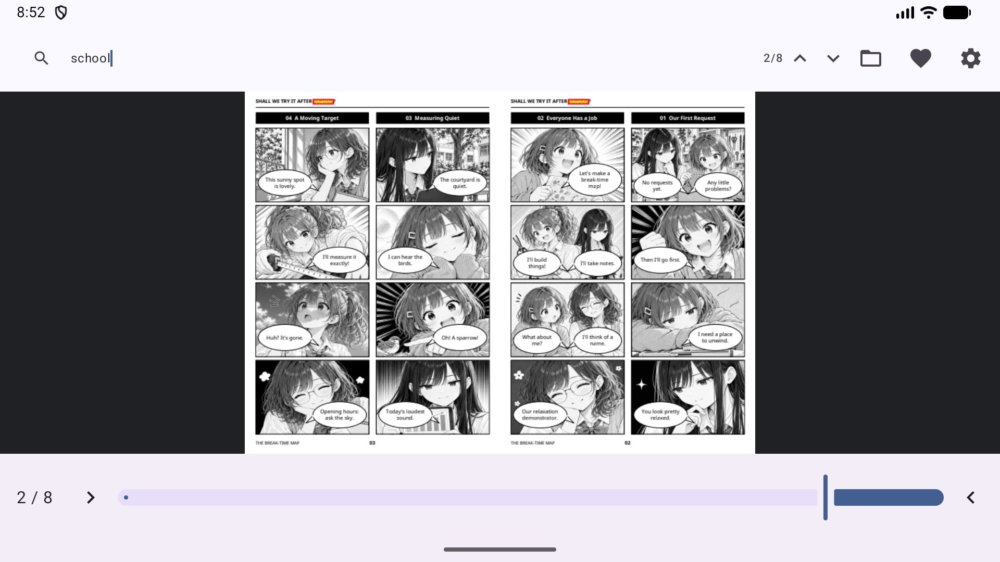
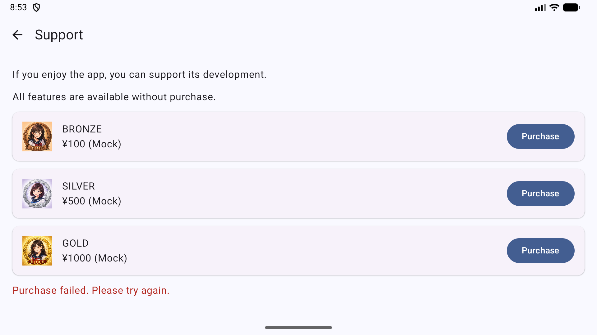

📱 Capturas de pantalla





Un visor de PDF moderno optimizado para doble página y lectura R2L en Android
Visualice dos páginas lado a lado. Perfecto para diseños inmersivos de manga y libros de arte.
Soporte completo para el orden de lectura de derecha a izquierda, incluyendo controles deslizantes invertidos y gestos de deslizamiento intuitivos.
Detecta automáticamente el diseño de la página y la dirección de lectura a partir de los metadatos del PDF para una experiencia sin configuración.
Búsqueda rápida de texto con resaltado preciso de coincidencias (fondo amarillo y borde rojo) en los documentos.


Prueba la aplicación con estos archivos PDF de ejemplo:
51 PDF en 14 idiomas y 17 variantes regionales, con tres episodios cada una. España/Latinoamérica, Brasil/Portugal y Taiwán/Hong Kong tienen filtros separados. La edición de Hong Kong usa chino escrito estándar, no cantonés coloquial. Se verifican el tamaño y SHA-256; se conservan los PDF anteriores.
"El Club de Pruebas" Episodios 1 y 2
© 2026 Komairo Hiyori
Las partes de esta obra sobre las cuales el editor posee derechos de autor y otros derechos licenciables se proporcionan bajo la licencia Creative Commons Attribution 4.0 International (CC BY 4.0).
https://creativecommons.org/licenses/by/4.0/
Al reutilizar esta obra, muestre el título, el nombre del autor "Komairo Hiyori", la fuente de la obra original y un enlace a la licencia, e indique claramente si se han realizado modificaciones.
Esta obra utiliza IA generativa para la creación de texto, imágenes y traducción. Los materiales cuyos derechos pertenecen a terceros, como las fuentes, están sujetos a sus respectivas licencias. Este aviso no restringe el uso de partes de la obra que no estén protegidas por derechos de autor o derechos similares.
MihirakiPDFViewer está diseñado con la privacidad como eje central.
Los PDF se procesan en tu dispositivo. Las descargas de ejemplos, los servicios en la nube, las comprobaciones de actualizaciones y las compras opcionales de apoyo utilizan conexiones de red.
Gratis y sin anuncios
La aplicación es completamente gratuita. Todas las funciones principales, como la visualización de PDF, la doble página y la búsqueda, están disponibles sin ninguna restricción, independientemente de si realiza una compra.
*Se ofrecen propinas opcionales dentro de la aplicación para apoyar al desarrollador. Los colaboradores verán una insignia conmemorativa especial en la pantalla de Ajustes.
Los PDF de ejemplo muestran primero el episodio más reciente. Puedes cambiar para empezar por el episodio 1. El orden se guarda y también se aplica al filtrar por idioma.
Los vídeos están en inglés y se abren en YouTube.